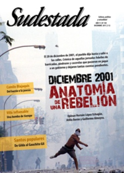

Buscar
"La poesía fue mi resistencia"
Se llama César González, pero para escribir eligió el seudónimo Camilo Blajaquis a partir del nombre del revolucionario cubano Cienfuegos, y el apellido de uno de los militantes asesinados que describe Rodolfo Walsh en ¿Quién mató a Rosendo? En su poesía se condensan la memoria del recluso y la esperanza del espíritu libre y solidario. Con su segundo libro ya en la calle, César propone desandar el camino que va del barrio a la literatura.
Edición N° 105
Diciembre 2011
Revista bimensual
Comprar edición impresaSumario
- Diciembre 2001: Anatomía de una rebelión
- Capitalismo en serio
- Imágenes paganas
- Villa Inflamable. Los beneficios del progreso
- "La poesía fue mi resistencia"
- "La cultura siempre encuentra huecos por donde sonar"
- De revolucionario trotkista a lógico matemático
- Musiquero de los caminos
- El berretín de escribir
Compartir Articulo
César, que hoy tiene 22 años, creció en la villa Carlos Gardel y pasó cinco años preso en distintas instituciones represivas estatales, cumpliendo una condena por secuestro extorsivo. Su gira por "rejalandia" empezó en 2005 y lo llevó a los institutos de menores San Martín, Roca, Belgrano y Luis Agote, y a los penales de máxima seguridad de Ezeiza y de Marcos Paz. Encarcelado se inició en la literatura política y luego en la escritura. Terminó el secundario, reconstruyó la biblioteca de uno de los reformatorios (a la que bautizó "Rodolfo Walsh") y fundó la revista ¿Todo Piola?, para que pibes como él puedan expresarse. Prisionero del sistema, también editó su primer libro de poesías, La venganza del cordero atado, cuando aún no había cumplido los 20 años. Hace algunos meses pudo volver a su casa bajo libertad condicional, y en noviembre pasado presentó su segundo libro, Crónica de una libertad condicional, con ilustraciones de Rocambole.
Una noche de otoño, después de cenar unos fideos a la boloñesa con su familia, el poeta conversó con Sudestada, con música de fondo de Patricio Rey y los raperos de Fuerte Apache. "Valoro mucho que me presenten como poeta. Para mí es fundamental, ese es el mensaje que quiero dar, porque en mis escritos y en mis poesías no vas a encontrar cosas como que yo soy un ejemplo y me creo el mejor del mundo, o que tengo más talento. No me gusta eso de que me consideren ejemplar, porque ¿qué es ser un ejemplo? ¿Salir de la cárcel bien? Muchos pueden decir: ‘miren, le hizo bien la cárcel, ¿vieron cómo la aprovechó? Él sí es un ejemplo'. No, ningún pibe tiene que pasar por la cárcel para descubrir lo que es la cultura. La cultura tiene que ser un derecho que uno adquiere al momento de nacer. La mayoría de la gente que vive en una villa se muere sin saber lo que es un buen recital o sin ver una obra de teatro interesante. El arte es lo mejor que tiene el ser humano, pero es también algo que rige bajo la propiedad privada. Entonces sí: poeta. Empecé a escribir poesía y la empecé a escribir adentro de la cárcel, y fue mi resistencia y fue con lo que yo me salvé".
-Te tocó de muy joven caer preso, no habías vivido nada...
-Había vivido 16 años. En un barrio como el mío, ¿sabés cuántos pibitos de 16 murieron? Por eso yo también me considero un sobreviviente, creo que eso es fundamental: haber sobrevivido. Sí, caí muy de pibe, no es ningún halago para mí haber pasado cinco años preso. Son cinco años que no van a volver más. ¿Sabés cuántos amores, cuántas sensaciones, cosas que podría haber pasado afuera me perdí? Por eso ningún pibe tiene que pasar por lo que yo pasé, porque no es lindo para nadie. En general, no tengo un buen recuerdo de la gente que trabaja en los institutos: ni del aparato represivo (es decir, guardias), ni del institucional (psicólogos, trabajadores sociales, operadores convivenciales). Si bien hubo excepciones de humanismo, en la mayoría encontré mucho prejuicio, egoísmo, y un constante reproche. Nunca me apoyaron ni me ayudaron a fortalecer mi vínculo con la literatura, es más, hicieron todo lo contrario: se preocupaban más por corregirme que por incentivarme.
-¿Sos consciente de que representás una especie de anomalía en el sistema?
-Todo sistema las tiene. Hasta los yankis las tuvieron. Salvando las distancias, no quiero compararme, pero hay algunas anomalías que son referentes para mí, ejemplos a seguir: ellos tuvieron sus Luther King y sus Malcolm X. Hasta las dictaduras más sangrientas tuvieron sus anomalías. Te lo digo así a grandes rasgos: ningún sistema es perfecto, siempre un humano va a querer ser humano. Siempre aparecen los que dicen "che, pará, está todo mal, vamos a despertarnos", aferrándose a lo artístico, a lo creativo, a lo pacífico.
(La nota completa en la edición gráfica de Sudestada Nº 105 - diciembre 2011)
Comentarios
Pablo Russo y Lucas Rodríguez Perea
Articulos más vistos


LIBRERÍA SUDESTADA

Colección infantil

Distribuidora de Libros

Suscripción

Sudestada en URUGUAY

Otros articulos de esta edición
Diciembre 2001: Anatomía de una rebelión
Fue la revuelta de las consignas inconclusas: ni "Argentinazo", ni "que se vayan todos", ni "piquete y cacerola". Sin embargo, ...
 Malditos: Jean van Heijenoort
Malditos: Jean van Heijenoort
De revolucionario trotkista a lógico matemático
Secretario de Trotsky y referente de la IV Internacional, también supo ser un matemático notable que tuvo un trágico final.
Villa Inflamable. Los beneficios del progreso
En Dock Sud, el mapa ecológico es también un mapa de la exclusión. 5 mil personas viven en el barrio ...
Capitalismo en serio
Hace unas semanas atrás, en algunos televisores de Santiago del Estero, se reflejó una expresión. Una sentencia ganó espacio en ...
 Santos populares
Santos populares
Imágenes paganas
Qué mejor manera de ingresar al mundo de los santos populares que hacerlo de la mano de los devotos. Por ...
Musiquero de los caminos
Durante un alto en uno de sus viajes arriba de "El Dino", el colectivo en el que se traslada llevando ...